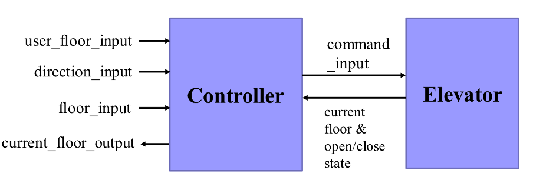
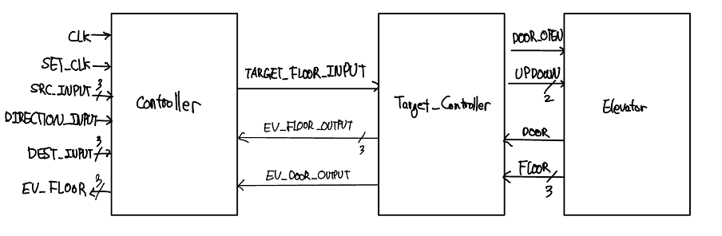
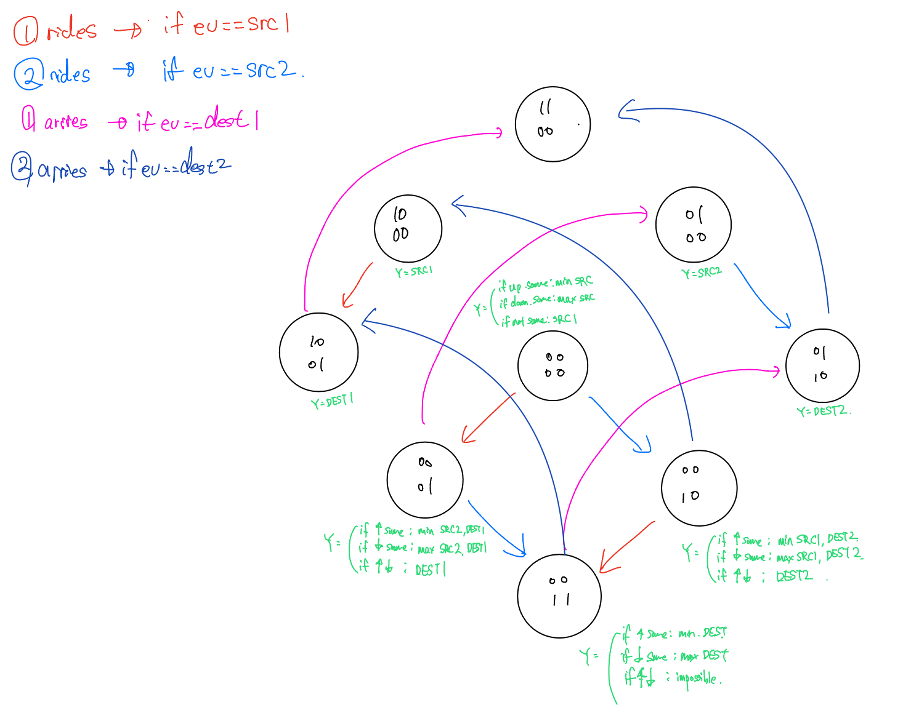
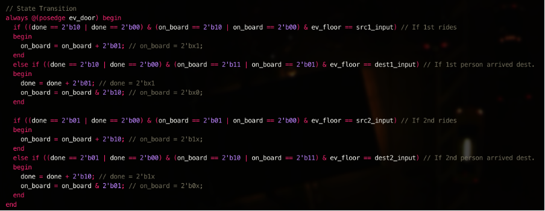
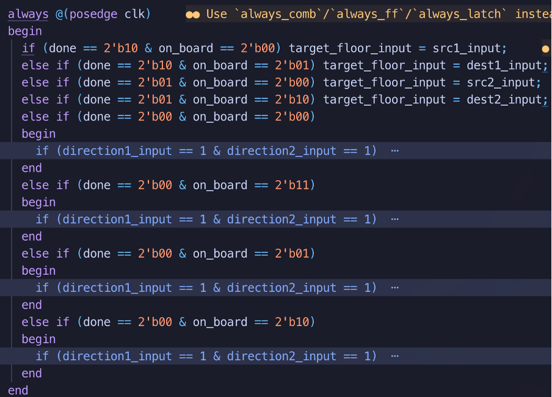
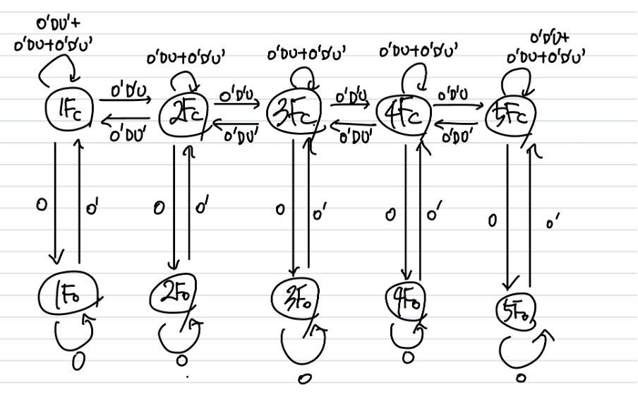
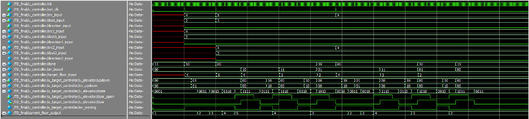
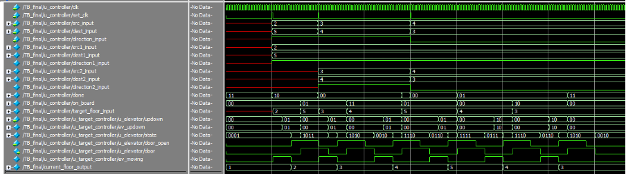

Specifications
- The elevator control system consists of an elevator car and a controller.
- You should design 3 Verilog modules including a test bench.
- All signal names in the codes should follow the below diagram.
- The elevator operates in a 5th floor building. 
- Example specification
- The elevator is currently on the 2nd floor.
- A user on the 4th floor pushes the down button.
- The elevator moves up to the 4th floor, and then the door opens.
- The user in the elevator pushes the 1st floor button.
- The door closes, and then move down to 1st floor, and finally opens.
- Maximally 2 persons use the elevator control system.
- For example, during the above procedure 3, if another user on the 5th floor pushes the down button, then the elevator moves up to 5th floor, and then 4th floor.
- It takes one second for the elevator to move one floor.
- It takes one second for the door to open and close, respectively.
Abstract
이번 과제에서는 최대 2인의 사용자 입력에 대해서 엘레베이터가 방문해야 할 층을 스케줄링하고, 엘레베이터가 이동하는 로직을 구현해야 한다. 과제에서 주어진 모듈간의 큰 틀은 다음과 같았다.
이를 세부적으로 구현하기 위하여 이와 같은 구조로 실제 모듈들을 설계하였다.

Target_Controller는 엘레베이터를 목표한 층으로 이동시켜주는 Controller의 sub-module이다. 또, 동일한 Input으로 사용자의 입력을 저장하기 위해서 set_clk를 이용하여 posedge가 나타날 때에만 레지스터에 값을 저장하도록 제작하였다. 각각의 층수들은 3비트 unsigned binary로 나타내었다.
Controller 모듈
Controller 모듈 State 정의
개발의 편의를 위하여 하나의 state에 대해 두가지 변수를 이용하였으며, 각각 done과 on_board이다. Done은 해당 비트의 사용자가 도착하였는지에 대한 정보이며, on_board는 해당 비트의 사용자가 현재 엘레베이터를 탑승하였는지에 대한 정보이다. 즉 예를 들어, done=00, on_board=11의 경우 2명의 사용자 모두 아직 목적지에 도착하지 못하였으며, 2명의 사용자 모두 엘레베이터를 탑승하고 있는 상황에 대한 state이다. 또 다른 예로 done=01, on_board=00의 경우 #2 사용자가 아직 목적지에 도착하지 못하였으며, 엘레베이터에 탑승하지도 못한 state임을 나타낸다. 이러한 notation을 토대로 state를 구상하면 다음과 같은 state들이 나올 수 있다.
| Done | On_board | 설명 |
|---|---|---|
| 11 | 00 | 사용자 입력이 없는 경우의 state |
| 10 | 00 | 1번 사용자가 아직 탑승하지 않았고 엘레베이터를 기다리고 있는 state + 한명의 사용자 입력을 추가적으로 받을 수 있는 상태 |
| 10 | 01 | 1번 사용자가 엘레베이터에 탑승하여 도착층으로 이동하는 state+ 한명의 사용자 입력을 추가적으로 받을 수 있는 상태 |
| 01 | 00 | 2번 사용자가 아직 탑승하지 않았고 엘레베이터를 기다리고 있는 state+ 한명의 사용자 입력을 추가적으로 받을 수 있는 상태 |
| 01 | 10 | 2번 사용자가 엘레베이터에 탑승하여 도착층으로 이동하는 state+ 한명의 사용자 입력을 추가적으로 받을 수 있는 상태 |
| 00 | 00 | 1번 사용자와 2번 사용자가 둘 다 입력을 하였고, 둘 다 엘레베이터를 탑승하지 못하고 대기중인 state |
| 00 | 01 | 1번 사용자와 2번 사용자가 둘 다 입력을 하였고, 1번 사용자는 엘레베이터에 탑승하여 자신의 도착층으로 이동중이고, 2번 사용자는 아직 엘레베이터에 탑승하지 않고 기다리고 있는 state |
| 00 | 10 | 1번 사용자와 2번 사용자가 둘 다 입력을 하였고, 2번 사용자는 엘레베이터에 탑승하여 자신의 도착층으로 이동중이고, 1번 사용자는 아직 엘레베이터에 탑승하지 않고 기다리고 있는 state |
| 00 | 11 | 1번 사용자와 2번 사용자가 둘 다 입력을 하였고, 둘 다 엘레베이터에 탑승하여 자신의 도착층으로 이동중인 state |
| 탑승한 사용자가 모두 도착층에 도착하였는데 엘레베이터에 탑승하고 있을 경우는 존재할 수 없다. | ||
| 탑승한 사용자가 모두 도착층에 도착하였는데 엘레베이터에 탑승하고 있을 경우는 존재할 수 없다. | ||
| 탑승한 사용자가 모두 도착층에 도착하였는데 엘레베이터에 탑승하고 있을 경우는 존재할 수 없다. | ||
| 탑승한 사용자가 모두 도착층에 도착하였는데 엘레베이터에 탑승하고 있을 경우는 존재할 수 없다. | ||
| 탑승한 사용자가 모두 도착층에 도착하였는데 엘레베이터에 탑승하고 있을 경우는 존재할 수 없다. | ||
| 탑승한 사용자가 모두 도착층에 도착하였는데 엘레베이터에 탑승하고 있을 경우는 존재할 수 없다. | ||
| 탑승한 사용자가 모두 도착층에 도착하였는데 엘레베이터에 탑승하고 있을 경우는 존재할 수 없다. |
이를 토대로 State Diagram을 그려보면 다음과 같이 나타낼 수 있다.

위의 2개의 bit가 done, 아래 2개의 bit가 on_board를 나타내며, transition하는 각각의 조건에 대해서는 색깔로 구분하였다. 또, 간단하게 표현하기 위해서 사용자가 입력하였을 때 state이 transition하는 것에 대해서는 표기하지 않았으며, 그 외 다른 조건들에 대해서는 자기 자신의 state을 유지하도록 하였다. 해당 state transition 만을 코드로 간략하게 표기하면 다음과 같다.

Controller 모듈은 다음과 같이 크게 3가지 부분으로 구성된다.
입력단
입력단의 경우 최대 2명의 사용자가 동시에 이용할 수 있으므로, 출발층, 도착층, 방향 세가지 입력을 받아 이를 저장해두는 역할을 한다. State를 입력받아 저장하기 위해서 set_clk라는 클락을 정의하였으며, 해당 input에서 posedge가 있을 때에 대해서만 유효한 input으로 간주한다. Posedge 입력이 들어올 때마다 input을 받아 저장하는데, 이때 출발층과 도착층이 같거나, 올라가는 입력인데 출발층보다 도착층이 작거나 거꾸로 내려가는 입력인데 출발층이 도착층보다 클 경우에 대해서는 시뮬레이터에 경고 메시지를 발생시키고 해당 input을 무시하였다.
올바른 입력이 들어왔을 때 done state를 확인하여 만약 00일 경우, 즉 2명의 사용자 모두 아직 도착하지 못했을 경우에 대해서는 엘레베이터가 아직 모든 일을 처리하지 못하였기 때문에 경고 메세지를 발생시키고 해당 Input을 무시하였다. 만약 done state의 두 비트중 어떤 하나라도 1일 경우 해당하는 레지스터에 사용자의 Input을 저장해 두었으며, done 의 두 비트중 1이였던 비트를 0으로 바꾸어 해당 동작을 수행해야 하는 상태로 state transition을 수행하였다.
타겟층 선택단 (output logic)
최대 2명의 사용자에 대해서 출발층과 도착층을 비교하여 현재 이동해야 할 타겟층을 선택하는 역할을 한다. 즉 현재 상태에 대해서 이동해야 할 타겟 층수를 결정하는 단계이다. 이를 결정하는 방법은 다음의 표와 같다.
| Done | On_board | 출력 |
|---|---|---|
| 11 | 00 | |
| 10 | 00 | 1번 사용자의 출발층 |
| 10 | 01 | 1번 사용자의 도착층 |
| 01 | 00 | 2번 사용자의 출발층 |
| 01 | 10 | 2번 사용자의 도착층 |
| 00 | 00 | 상황에 따라 판단
|
| 00 | 01 | 상황에 따라 판단
|
| 00 | 10 | 상황에 따라 판단 (Done 00, On_board 01의 상황과 유사)
|
| 00 | 11 | 상황에 따라 판단
|
| 11 | 01 | 탑승한 사용자가 모두 도착층에 도착하였는데 엘레베이터에 탑승하고 있을 경우는 존재할 수 없다. 따라서 이전의 출력을 유지한다. |
| 11 | 10 | 탑승한 사용자가 모두 도착층에 도착하였는데 엘레베이터에 탑승하고 있을 경우는 존재할 수 없다. 따라서 이전의 출력을 유지한다. |
| 11 | 11 | 탑승한 사용자가 모두 도착층에 도착하였는데 엘레베이터에 탑승하고 있을 경우는 존재할 수 없다. 따라서 이전의 출력을 유지한다. |
| 10 | 10 | 탑승한 사용자가 모두 도착층에 도착하였는데 엘레베이터에 탑승하고 있을 경우는 존재할 수 없다. 따라서 이전의 출력을 유지한다. |
| 10 | 11 | 탑승한 사용자가 모두 도착층에 도착하였는데 엘레베이터에 탑승하고 있을 경우는 존재할 수 없다. 따라서 이전의 출력을 유지한다. |
| 01 | 01 | 탑승한 사용자가 모두 도착층에 도착하였는데 엘레베이터에 탑승하고 있을 경우는 존재할 수 없다. 따라서 이전의 출력을 유지한다. |
| 01 | 11 | 탑승한 사용자가 모두 도착층에 도착하였는데 엘레베이터에 탑승하고 있을 경우는 존재할 수 없다. 따라서 이전의 출력을 유지한다. |

이를 작성한 코드는 위와 같다.
타겟층 이동단
타겟층이 선택되었을 때, 엘레베이터의 현재 층수와 비교하여 해당 타겟층으로 이동하는 역할을 한다. 해당 부분은 target_controller 모듈로 따로 선언하였다. 해당 모듈은 타겟층과 현재 엘레베이터의 상태를 비교해서 엘리베이터에 올라가는 명령을 내릴지, 내려가는 명령을 내릴지, 문을 열지 닫을지에 대한 정보를 Elevator 모듈에 전달하는 중간 모듈이다. 엘레베이터가 각 동작을 수행할 때에 1초씩 걸림을 고려하여 지연을 주었다.
Elevator 모듈
Elevator 모듈의 경우 총 10가지 State로 나눈 State Machine을 구상하여 제작하였다. 회로의 안정성을 위해서 그레이 코드를 이용하여 상태들을 나타내었으며, 각각의 상태들에 대한 상태머신은 다음과 같다.

상태에 대한 Notation은 1Fc는 floor1_closed, 2Fc는 floor2_closed, 3Fo는 floor3_closed 등등과 같으며, 3가지 input (혹은 DU를 하나의 버스로 생각한다면 2가지 input, 실제 코드에서는 이와 같이 구현되어 있다.) 은 각각 O, D, U로, 각각 Open, Down, Up을 의미한다. 즉, D’U의 경우 내려가는 것에 대한 입력, DU’의 경우 올라가는 것에 대한 입력, DU 혹은 D’U’은 IDLE상태로 있는 것에 대한 입력이며, 올라가거나 내려갈때는 항상 문이 닫힌 상태로, IDLE 상태일때는 문이 열리고 닫힌 상태 모두 가능하다.
각각의 층에서 문이 닫혀있는 상태일 때, 올라가는 입력 (O’D’U)이 들어오면 위층의 닫힌 상태로 상태를 바꾸었으며, 반대로 내려가는 입력 (O’DU’)이 입력된다면 아랫층의 닫힌 상태로 상태를 바꾸었다. 또, 문이 열리는 입력 (O)이 입력된다면 해당 층에서 문이 열린 상태로 상태를 바꾸었으며, 문이 열린 상태에서 문을 닫는 입력 (O’)을 입력하였을 때에는 해당 층의 문이 닫힌 상태로 상태를 바꾸도록 하였다. 1층에서 닫힌 상태로 있을 경우, 만약 O’DU’ (내려가는 입력)과 같이 불가능한 입력이 들어온다면 해당 입력을 수행하지 않고 같은 상태로 유지하도록 하였으며, 이는 5층에서 O’D’U (올라가는 입력)에서도 마찬가지로 적용하였다.
위의 상태머신에서 그레이 코드화 시켜 예기치 못한 오류를 최소화하도록 각각의 상태들을 할당하였다. 즉, 각각의 상태에 대한 코드는 다음과 같다.
| floor1_closed | 0001 | floor1_open | 1001 |
|---|---|---|---|
| floor2_closed | 0011 | floor2_open | 1011 |
| floor3_closed | 0010 | floor3_open | 1010 |
| floor4_closed | 0110 | floor4_open | 1110 |
| floor5_closed | 0111 | floor5_open | 1111 |
즉, MSB는 문이 열려있는지 닫혀있는지에 대한 상태이며, 나머지 3비트는 각각의 층에 대한 그레이 코드이다. 위의 상태머신 다이어그램을 참조하면 두가지 이상의 비트가 동시에 바뀌는 경우는 없음을 확인할 수 있다.
최종적으로는, 각 상태를 문이 열렸는지 혹은 몇층인지로 변환해주는 부분이 필요하여, 그레이 코드를 부호가 없는 binary로 xor 연산을 이용하여 변환해 주었으며, 문의 열림/닫힘 상태는 MSB 비트를 출력하여 각각의 상태에 대해서 변환한 값을 출력해주었다.
실제 코드상에서 이를 구현할 때에는 문이 열리고 닫힐 때 1초, 엘레베이터가 층을 이동할 때 1초의 delay가 있으므로 클락을 이용하여 다른 상태로 전환될 때 delay를 주어 이를 가상으로 구현하였다.
테스트벤치
엘레베이터는 초기상태로 1층에서 문을 닫은 상태로 정지하고 있다고 가정하였다. 이는 엘레베이터 모듈에 정의되어 있다.
예제 1
해당 테스트벤치는 다음과 같은 입력을 가진다.
- 초기상태 5초딜레이
- 4층→2층 5초 딜레이
- 5층→3층 14초 딜레이 (엘레베이터가 이전 작업들을 마저 수행하기 위해서 기다리는 delay로, 이전 수행중인 작업을 완료하기 위해서는 최소 11초의 딜레이가 필요하다. )
- 4층→3층
- 끝날때까지 충분히 딜레이

의도하였던 대로, 1층에 있는 엘레베이터가 4층의 사용자를 데려가기 위해 4층으로 이동중에 5층에서 내려가는 입력이 들어와 5층을 우선적으로 방문하여 두명의 사용자를 같이 내려갈 수 있도록 target_floor_input이 바뀌었고, 이에 따라 엘레베이터도 5층을 우선적으로 방문하여 문을 열어 2번 사용자를 태운다. 그리고 순차적으로 4층에 방문하여 1번 사용자도 태운 뒤, 2번 사용자와 1번 사용자 각자의 목적지인 3층과 2층을 순차적으로 방문하여 사용자가 하차할 수 있음을 확인하였다. 또, 1번 사용자의 목적지에 도달한 이후에도 새로운 사용자의 input을 수행하기 위해서 4층으로 target_floor_input이 세팅되어 엘레베이터가 이동하였음을 확인하였다. 그리고 마지막 사용자까지 최종 도착층인 2층에 내려주고 idle 상태로 기다림을 확인할 수 있다.
예제 2
해당 테스트벤치는 다음과 같은 입력을 가진다.
- 2층→5층 5초 딜레이
- 3층→4층 5초 딜레이
- 5초 딜레이 (엘레베이터가 이전 작업들을 마저 수행하기 위해서 기다리는 delay로, 이전 수행중인 작업을 완료하기 위해서는 최소 4초의 딜레이가 필요하다. )
- 4층→3층
- 끝날때까지 충분히 딜레이

의도하였던 대로, 1층에서 4층에 있는 첫번째 사용자를 태우기 위해 올라가던 중에 5층에 있는 두번째 사용자가 입력하였기 때문에, 효율을 위해서 5층을 먼저 방문하여 두번째 사용자를 태운 뒤, 4층을 방문하여 첫번째 사용자를 태우고, 목표한 3층과 2층으로 순차적으로 방문한다.